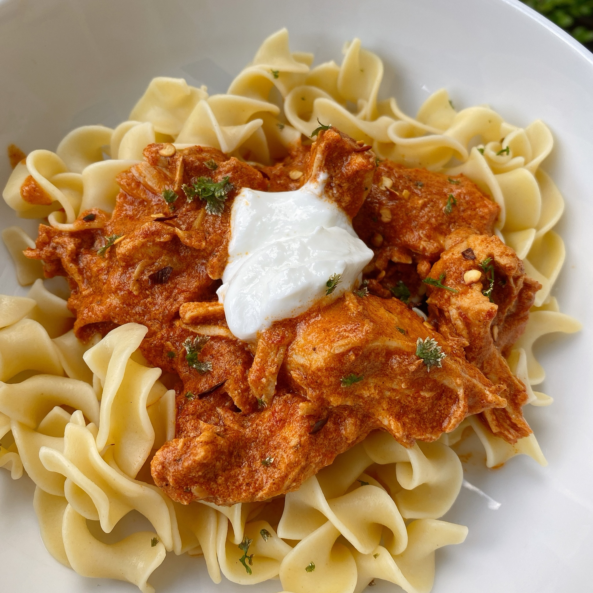

Instan Pot Chicken Paprikash

Description
This chicken paprikash can be made either in an Instant Pot® or on the stovetop. No matter which method you use, it will be cooked in less than 30 minutes! Feel free to use a blend of paprika--I used 3 different types: smoked paprika, sweet paprika, and regular paprika.
Ingredients for Two Servings
- ¼ (12 ounce) package egg noodles
- ½ tablespoon butter
- ¾ teaspoon minced parsley
- ⅜ teaspoon salt, divided
- ¼ teaspoon ground black pepper, divided
- ¾ teaspoon olive oil
- ¾ shallots, thinly sliced
- 1½ cloves garlic, coarsely chopped
- ½ cup arrabbiata pasta sauce
- 1 tablespoon chicken broth
- ½ tablespoon and ¾ teaspoon red wine vinegar
- ½ pounds boneless, skinless chicken thighs
- ¼ cup plain yogurt, divided
- ½ tablespoon and ¾ teaspoon paprika
Directions
- Fill a large pot with lightly salted water and bring to a rapid boil. Cook egg noodles at a boil until tender yet firm to the bite, 7 to 9 minutes. Drain and toss with butter, parsley, 1/2 teaspoon salt, and 1/2 teaspoon pepper. Keep noodles warm while preparing the chicken.
- Turn on a multi-functional pressure cooker (such as Instant Pot®) and select Saute function. Add oil, shallots, and garlic; saute until fragrant, 2 to 3 minutes. Pour in pasta sauce, chicken broth, and red wine vinegar.
- Season chicken with remaining 1 teaspoon salt and 1/2 teaspoon pepper. Add chicken to the pot. Close and lock the lid. Select high pressure according to manufacturer's instructions; set timer for 12 minutes. Allow 10 to 15 minutes for pressure to build.
- Release pressure using the natural-release method according to manufacturer's instructions, about 10 minutes. Release remaining pressure carefully using the quick-release method.
- Place 1/2 cup yogurt in a small bowl. Add in 1/2 cup of sauce, a tablespoon at time, to temper the yogurt. Add paprika and blend well. Pour yogurt mixture back into the pot. Shred the chicken thighs and serve over cooked noodles. Garnish each serving with a dollop of yogurt.
Nutrition Facts for One Servings
441 calories; protein 28.2g; carbohydrates 42.1g; fat 17.7g; cholesterol 113.3mg; sodium 889mg.